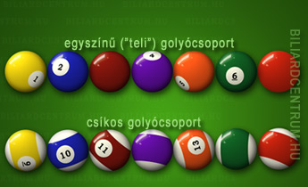

Szabályok (8-as pool)
Kezdés
Első lépés a biliárd golyók elhelyezése a következő szabályok mentén:
- A golyókat háromszög alakzatban kell felhelyezni
- A háromszög 2 alsó csúcsára ne egy csoportba tartozó golyók kerüljenek
- A fekete golyót a harmadik sorban, középre kell elhelyezni
Golyócsoport
A 15 golyó közül 8 egyszínű, 7 csíkos. A 8-as, fekete golyó nem része a golyócsoportoknak, így típusonként 7-7 golyó alkotja azokat.
Kezdőlökés után golyócsoportot kell választani, és lökés előtt megnevezni az általunk kiszemelt golyót. Ha sikerül azt lyukba lőni, akkor folytathatjuk a játékot, különben az ellenfél következik. A továbbiakban a választott csoport golyóit kell a lyukba küldenünk, majd legvégül a fekete 8-ast.
Hibák
A következő hibák esetén az ellenfél következik:
- fehér golyó lyukba kerül
- bármelyik biliárd golyó (kivéve a 8-ast) leugrik az asztalról
- nem löktünk lyukba egyetlen golyót sem és nincs falérintés
- fehér golyó nem a saját golyócsoportunkat érinti először